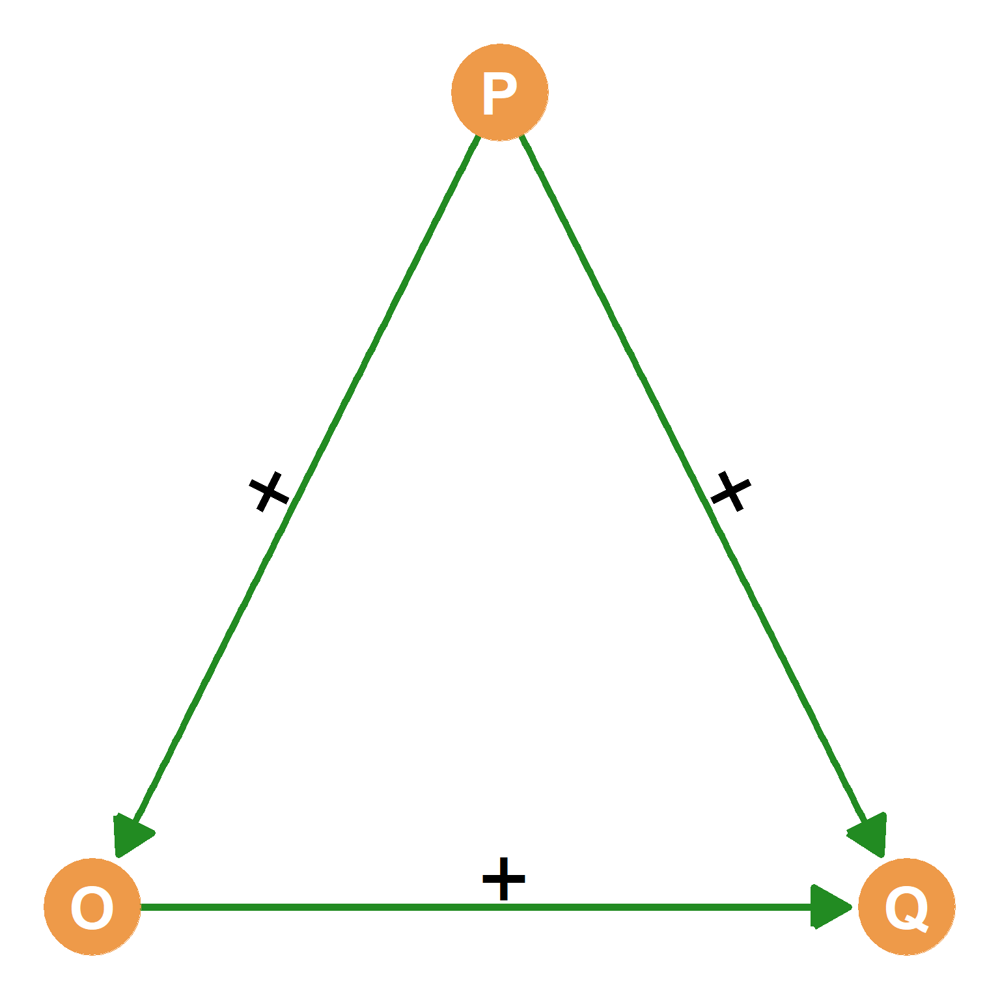
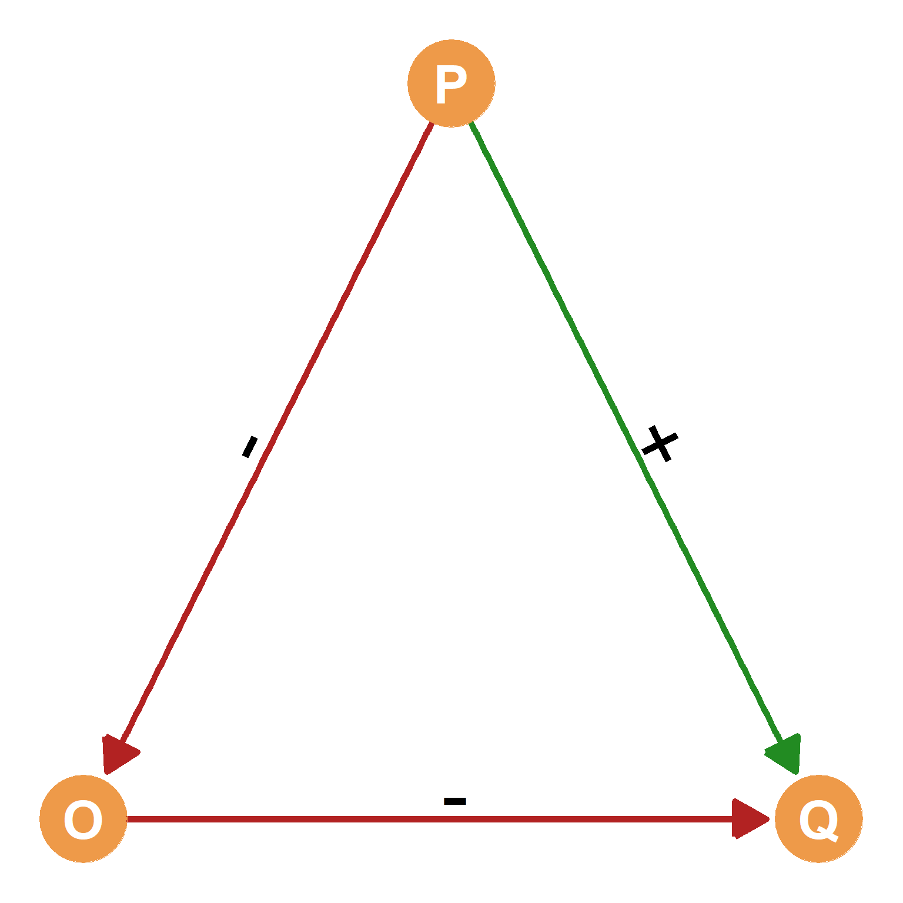
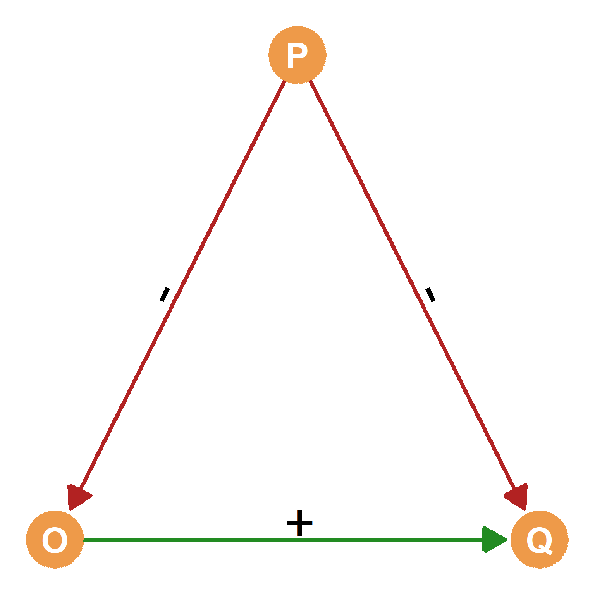
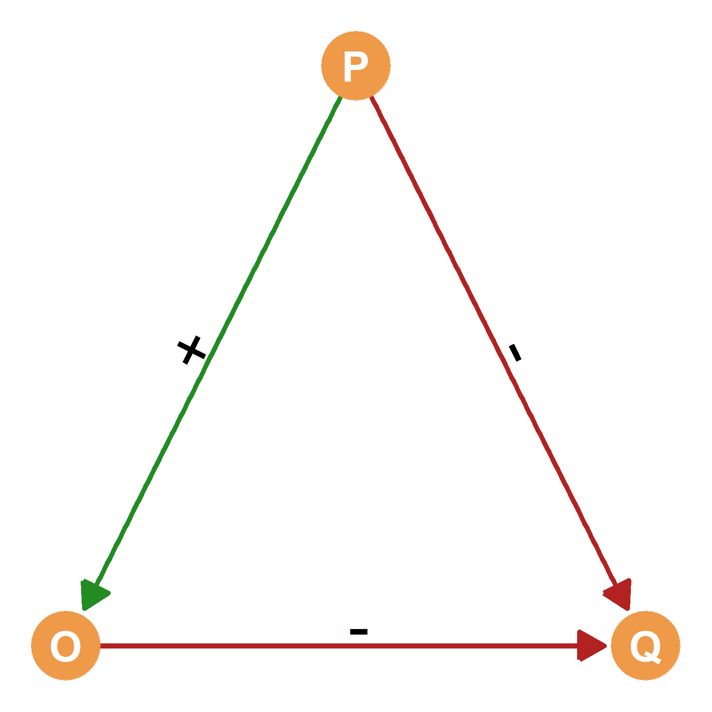
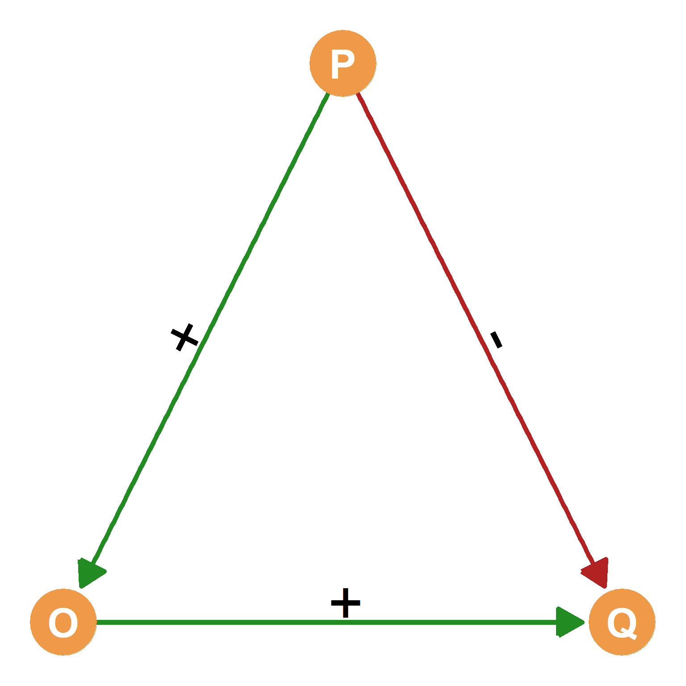
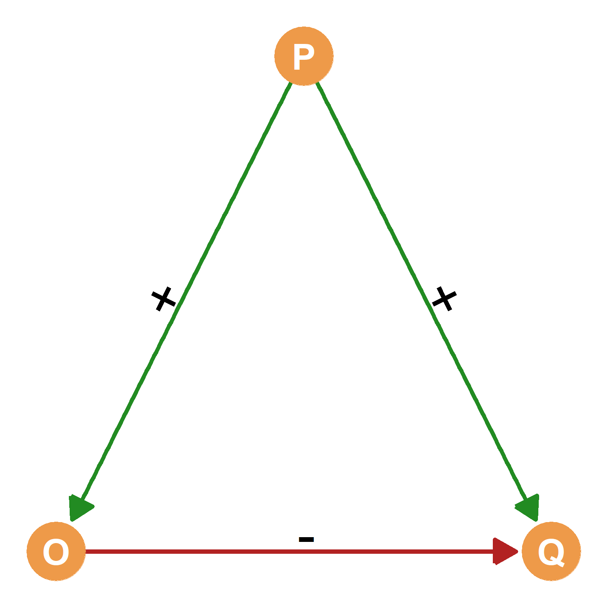
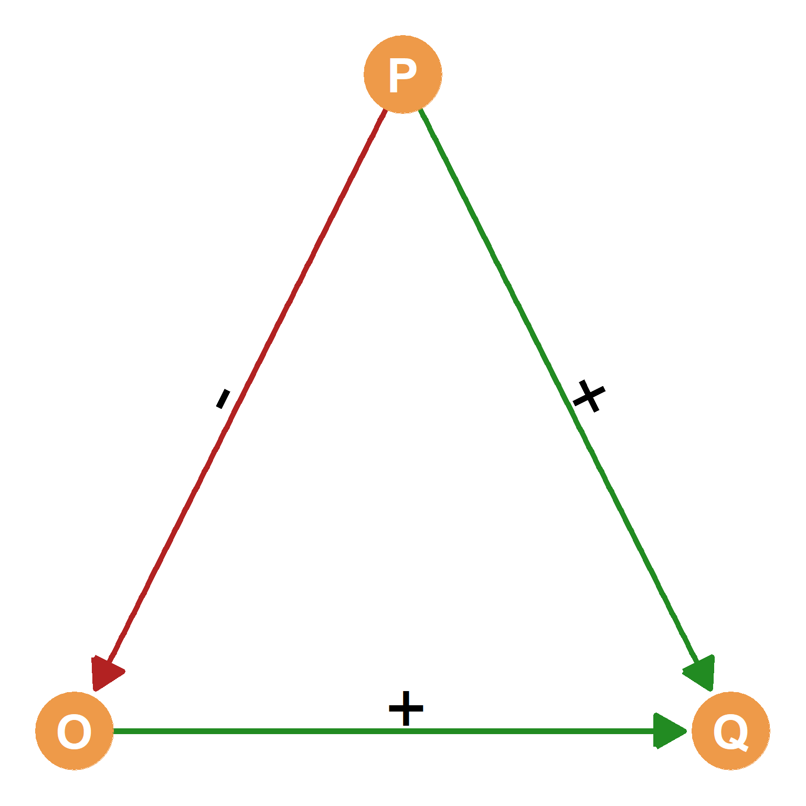
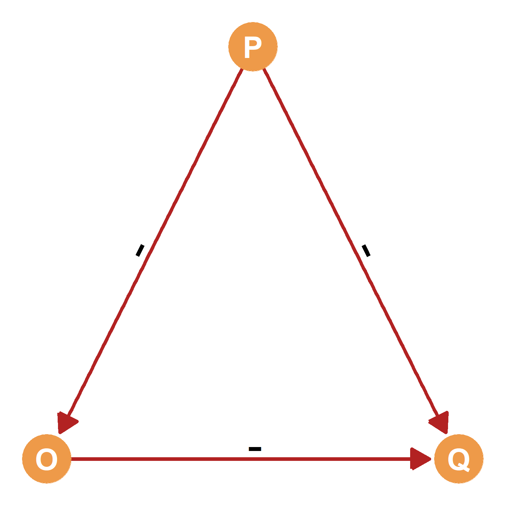
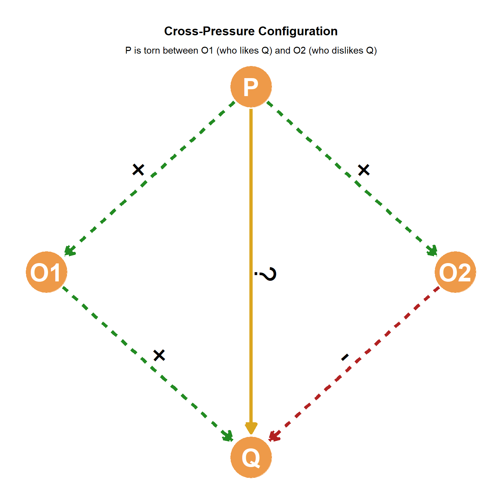

39 Triadic Balance
39.1 The High School Cafeteria Dilemma
Imagine you are walking into the school cafeteria. You see your best friend, Alex. Naturally, you want to sit with them. But sitting next to Alex is Jordan. You and Jordan have a long history of not getting along. Suddenly, you feel an uncomfortable tension. Do you sit down and endure Jordan’s company for Alex’s sake, do you ask Alex to leave Jordan behind, or do you decide to eat elsewhere?
This uncomfortable scenario can be understood according to the principles of Triadic Balance Theory. At its core, this theory explains how we navigate our social worlds by examining networks of three entities—or “triads”—and the positive and negative relationships among them. As such, Triadic Balance Theory is a social psychological framework that aims to explain the anticipated configurations of sentiments within sentiment networks, extending Heider’s (1946) concept of dyadic balance (covered in Chapter 38) to include a third party.
Because Balance Theory is a social-psychological theory, sentiment networks are built from valenced ties, which can be positive (e.g., liking) or negative (e.g., disliking). The theory states that unbalanced configurations within a triad (which, as we saw in Section 7.2.1, is a three-person social network configuration) consisting of P, an object O, and a third party Q produce “tension” for the focal node (P). This tension creates a psychological drive for these configurations to transition towards balanced ones, either on the part of P or the others.
39.2 The key principles of Triadic Balance Theory
Balance theory uses four basic components to analyze triadic configurations:
- A person (P): The focal individual from whose perspective the triad is analyzed.
- An other (O): Towards which the focal person (P) holds a sentiment (a directed asymmetric tie from P to O), which can be either positive or negative.
- A third party (Q): Towards which both the person (P) and the other (O) also have some sentiment (directed asymmetric ties from P to Q and from O to Q). It’s important to note that Q does not necessarily have to be a real person; it can be any object, such as an organization, a collective, a cultural object, or even an idea.
- Directed, Signed Edges: These indicate positive or negative sentiments that P and O have towards the third party Q, and P towards O. For instance, if “P likes O” is represented as a directed edge with a positive sign going from P to O. In contrast, “O hates Q” is represented by a directed edge going from O to Q with a negative sign.
39.3 Balanced vs. Unbalanced Configurations:
Triadic balance theory distinguishes between balanced and unbalanced triadic configurations.
39.3.1 Balanced Triads
In Balance Theory, balanced triadic configurations are characterized by harmonious and stable sentiments, creating no “tension” within the triad. These configurations follow a mathematical rule where multiplying the signs of the edges (positive ties as +1, negative ties as -1) results in a positive number (+1). A simpler rule for identification is that a triad is balanced if it has either zero or two negative links.
Here are some concrete examples of balanced triadic configurations:
- “A friend of a friend is a friend”:
- Description: In this configuration, Person (P) likes Object (O) (positive tie, +1), Object (O) likes a Third Party (Q) (positive tie, +1), and Person (P) also likes the Third Party (Q) (positive tie, +1). All sentiments are positive. This configuration of triadic sentiments is depicted in Figure 39.1 (a).
- Example: Imagine that you (P) have a friend (O) whom you like, and they like another classmate (Q) who you also like. Everything seems fine here!
- Mathematical Representation: (+1) * (+1) * (+1) = +1.
- Sign Pattern: P-O (+) , O-Q (+) , P-Q (+). This triad has zero negative links; thus, it is balanced.
- “An enemy of an enemy is a friend”:
- Description: Person (P) dislikes Object (O) (negative tie, -1), Object (O) dislikes a Third Party (Q) (negative tie, -1), but Person (P) likes the Third Party (Q) (positive tie, +1). This configuration of triadic sentiments is depicted in Figure 39.1 (b).
- Example: Imagine that you (P) have a rival (O) who dislikes another classmate (Q). It makes sense for you to extend a positive sentiment to the rival of your rival, as that means that now both of you can form an alliance against them.
- Mathematical Representation: (-1) * (-1) * (+1) = +1.
- Sign Pattern: P-O (-) , O-Q (-) , P-Q (+). This triad has two negative links; thus, it is balanced.
- “A friend of an enemy is an enemy”:
- Description: If a person P dislikes O (negative tie, -1), and O likes Q (positive tie, +1), then P should dislike Q (negative tie, -1). This configuration of triadic sentiments is depicted in Figure 39.1 (c).
- Example: Imagine that you (P) have a huge fight with somebody else (O). You later find out that they have a best friend (Q). It makes sense that you will start to hate them as well!
- Mathematical Representation: (-1) * (+1) * (-1) = +1.
- Sign Pattern: P-O (-) , O-Q (+) , P-Q (-). This triad has two negative links; thus, it is balanced.
- “An enemy of a friend is an enemy” :
- Description: In this scenario, if P likes O (positive tie, +1), and O dislikes Q (negative tie, -1), then P should dislike Q (negative tie, -1) to maintain balance. This configuration of triadic sentiments is depicted in Figure 39.1 (d).
- Example: Imagine that country P and country O are longstanding allies in the international system. Now imagine that country O declares war on country Q. It makes sense that now country P gets dragged into the conflict and also has to declare war on country Q.
- Mathematical Representation: (+1) * (-1) * (-1) = +1.
- Sign Pattern: P-O (+) , O-Q (-) , P-Q (-). This triad has two negative links; thus, it is balanced.




39.3.2 Unbalanced Triads
Unbalanced triadic configurations in Balance Theory are those that create “tension” and are considered unstable. The theory states that these unbalanced triads will tend to transition to balanced configurations as the person (P) changes their sentiments toward the object (O) or the third party (Q) to alleviate this tension. Mathematically, if you multiply the signs of the edges of an unbalanced triad, the result is a negative number (-1). A simpler rule is that a triad is unbalanced if it has an odd number of negative links (one or three).
Here are some concrete examples of unbalanced triadic configurations:
- “A friend of my friend is my enemy”:
- Description: In this configuration, Person (P) likes Object (O) (a positive tie, +1), Object (O) likes a Third Party (Q) (a positive tie, +1), but Person (P) dislikes the Third Party (Q) (a negative tie, 1). This configuration of triadic sentiments is depicted in Figure 39.2 (a).
- Example: You (P) have a friend (O) whom you like, and they like another classmate (Q) whom you dislike.
- Mathematical Representation: P-O (+) * O-Q (+) * P-Q (-) = (+1) * (+1) * (-1) = -1.
- Implication: This situation creates discomfort due to the conflicting sentiment P has towards their friend and their friend’s friend.
- “An enemy of a friend is a friend”:
- Description: Person (P) likes Object (O) (a positive tie, +1), Object (O) dislikes Third Party (Q) (a negative tie, -1), but Person (P) likes Third Party (Q) (a positive tie, +1). This configuration of triadic sentiments is depicted in Figure 39.2 (b).
- Example: You (P) love Marvel movies (Q), but your long-time partner (O) (who you like, duh!) hates them.
- Mathematical Representation: P-O (+) * O-Q (-) * P-Q (+) = (+1) * (-1) * (+1) = -1.
- Implication: This configuration also leads to tension in the triad due to the conflicting sentiments P and O have toward the third party Q.
- “A friend of an enemy is a friend”:
- Description: Person (P) dislikes Object (O) (a negative tie, -1), Object (O) likes Third Party (Q) (a positive tie, +1), but Person (P) likes Third Party (Q) (a positive tie, +1).
- Example: Imagine (the horror) that you (P) and your archnemesis (O) are attracted to the same person (Q). This would definitely create tension and discomfort (but it may also make a good plotline for a YA story). This configuration of triadic sentiments is depicted in Figure 39.2 (c).
- Mathematical Representation: P-O (-) * O-Q (+) * P-Q (+) = (-1) * (+1) * (+1) = -1.
- Implication: This also leads to tension in the triadic configuration due to the similar sentiments P and O have toward the third party Q.
- “An enemy of my enemy is also my enemy”:
- Description: Person (P) dislikes Object (O) (a negative tie, -1), Object (O) dislikes Third Party (Q) (a negative tie, -1), and Person (P) also dislikes Third Party (Q) (a negative tie, -1). This configuration of triadic sentiments is depicted in Figure 39.2 (d).
- Example: Imagine that you (P) hate the Yankees (O), but that you also (correctly) hate the Red Sox (Q). However, whenever you see the Yankees playing the Red Sox, it is difficult to root for one or the other because you want them both to lose!
- Mathematical Representation: P-O (-) * O-Q (-) * P-Q (-) = (-1) * (-1) * (-1) = -1.
- Implication: This is another type of unbalanced triad that creates tension, despite all parties having negative sentiments towards each other.
39.4 Tension and Change
Why does balance matter? Because unbalanced configurations produce psychological tension and discomfort. Unbalanced triads make us feel uneasy, and humans naturally want to resolve that uncomfortable state.
Accordingly, the basic scientific prediction of Balance Theory is that unbalanced configurations will tend to transition to balanced configurations. This transition occurs when the person (P) changes their sentiments toward O or Q to restore balance and alleviate internal tension. This can be done by P changing the sign or valence of the directed tie that goes from P to O or from P to Q. Balanced configurations, conversely, do not produce tension and are stable, yielding a positive product (+1) when multiplying their edge signs, and having either zero or two negative links.
For example, if your friend Alex keeps hanging out with your enemy Jordan, the tension might force you to either make peace with Jordan (turning a negative tie into a positive one) or end your friendship with Alex (turning a positive tie into a negative one). In this way, unbalanced networks naturally tend to transition into balanced configurations over time.




39.5 Cross-Pressure
In balance theory, cross-pressure refers to a situation in which an individual experiences conflicting social relations, leaving them caught between two worlds (Davis 1963). Because we are all embedded in complex social networks with numerous connections, we frequently interact with multiple people who might feel very differently about the exact same object or person, creating a complex mixture of balance and imbalance across the different triads implied by those connections. This situation pushes the focal individual into an uncomfortable position, where competing social forces pull them in opposite directions.
To illustrate this, imagine you (P) have two good friends, friend O1 and friend O2. Both of these friends have very different attitudes toward a mutual classmate named Taylor (Q). Let’s say Friend O1 strongly dislikes Taylor (-), while Friend O2 really likes Taylor (+). Because you have a positive relationship with both of your friends (+, +), you find yourself caught in the middle of their opposing sentiments, as illustrated in Figure 39.3. According to balance theory, this specific cross-pressure dynamic predicts that you will develop an ambivalent attitude toward Taylor (+/-). The conflicting opinions of your two friends create psychological tension, as it is difficult to maintain harmony when your social ties are at odds with one another.

Balance theory also tells us that unbalanced, tension-filled configurations naturally tend to transition toward balanced configurations. To eliminate cross-pressure, achieve balance, and resolve your ambivalence, you would need to alter the network’s configuration of valenced ties. One way to do this is to change your attitude toward either Friend Q1 or Friend Q2, potentially distancing yourself from one of them, so their conflicting opinion no longer pressures you. Alternatively, you could try to convince either Friend Q1 or Friend Q2 to change their own attitude toward Taylor so that both of your friends are finally in agreement. By shifting these underlying sentiments, you remove the cross-pressure and restore a comfortable equilibrium to your social circle
Another common example of cross-pressure today pertains to politics. For instance, many people (P) have family members (O1 and O2) with opposite attitudes to one of the major political parties (Q), which creates tension for P (imagine that your brother loves the democrats but your sister hates them). This is the same configuration of triadic sentiments depicted in Figure 39.3 but with Q being a non-personal object (a political party). Here, once again, balance theory predicts that, as long as this configuration remains, your attitude towards the democrats will be ambivalent, combining both positive and negative sentiments, and moving you towards the dreaded moderate “middle,” or perhaps worse, making you an “independent” with no strong partisan affiliation.